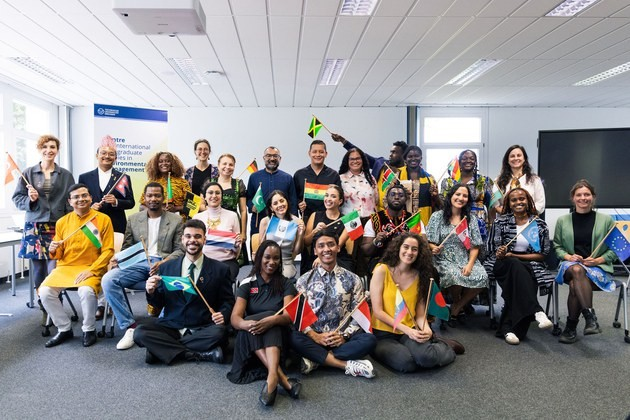

Projeto
CIPSEM / Technische Universität Dresden
Curso internacional UNEP/UNESCO/BMUV
Formação internacional em mobilidade sustentável, governança climática e transformação de espaços urbanos na TU Dresden.
Parceiros: CIPSEM, Technische Universität Dresden (TU Dresden), UNEP, UNESCO, BMUV

Detalhes
- Curso
- 92nd UNEP/UNESCO/BMUV International Course on Sustainable Mobility: Transforming Urban Spaces, realizado pelo Centre for International Postgraduate Studies of Environmental Management (CIPSEM) da Technische Universität Dresden.
- Contexto
- Programa com profissionais de 20 países, combinando aulas, estudos de caso, visitas técnicas, relatórios por país e exercícios de negociação.
- Temas
- Mobilidade sustentável, planejamento urbano, clima, políticas públicas, transporte e espaços urbanos inclusivos.